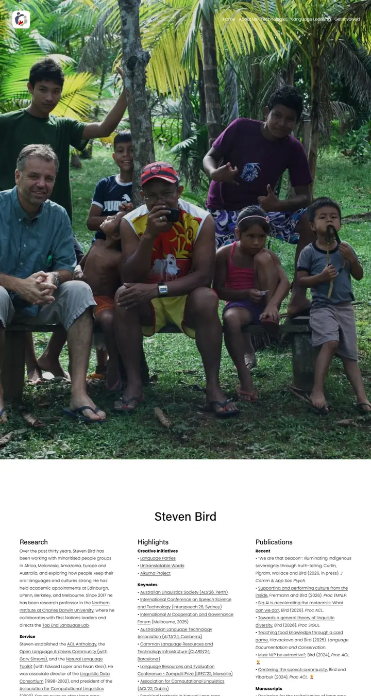

Steven Bird
A field photograph from a village bench, then a newspaper page: one centred name and three plain black columns of work.

Checked against the rendered page. Squarespace generated CSS was not read; all values come from rendered-element probes. The tall screenshot was taken with a taller window, so its hero is taller than the 594px rendered at 1440x900.
Why it is here
A full-bleed fieldwork photo opens into a centred name and an editorial three-column text layout. Unusual and human, unlike the other picks.
Overview
Color Palette
Typography
acumin-pro
Steven Bird, language documentation, Indigenous and local languages
Abstract · Method · Results · BibTeX — 0123456789
Poppins
Steven Bird, language documentation, Indigenous and local languages
Abstract · Method · Results · BibTeX — 0123456789
Spacing & Shape
Page Modules
Guidelines
More like this

Amir Bar
A clean faculty prospectus in Imperial blue: Inter on white, pill links, and paper cards that lift a few pixels when you reach for them.

Christoph Feichtenhofer
A conference-hall banner in Facebook blue, then a long ledger of papers in red ink, green venues and justified grey abstracts.

David Novotny
A harbour at dusk beside a quiet reading room: a fixed teal-to-midnight panel with right-aligned contact lines, and soft grey text with tangerine links on white.

Jaeyeon Kim
A quiet seminar handout in light Roboto, where one red-highlighted question and a row of mint tags are the only raised voices.

Jonathan Shafer
A keynote opening slide: one full-bleed slate-blue field, a ringed portrait, a 108px name and a centred paragraph you read from across the room.

Junyang Lin
A quiet researcher's folio on warm paper: Garamond headings, teal small labels and hairline-ruled entries.